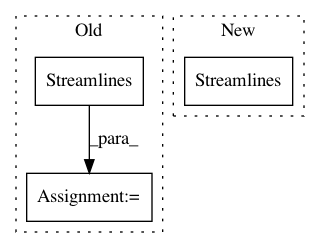

15fbbc27a84244c8ca283b1578931701f00f6370,dipy/tracking/tests/test_utils.py,,test_cluster_confidence,#,45
Before Change
def test_cluster_confidence():
// two identical streamlines should raise an error
mysl = np.array([np.arange(10)] * 3).T
test_streamlines = Streamlines([mysl]).append([mysl])
assert_raises(ValueError, cluster_confidence, test_streamlines)
// 3 offset collinear streamlines
test_streamlines = Streamlines([mysl]).append([mysl+1]).append([mysl+2])
After Change
test_streamlines_p2 = Streamlines().append(
[mysl], cache_build=True).append(
[mysl3]).append([mysl4]).finalize_append()
test_streamlines_p3 = Streamlines().append(
[mysl], cache_build=True).append(
[mysl2]).append([mysl3]).append([mysl5]).finalize_append()
In pattern: SUPERPATTERN
Frequency: 3
Non-data size: 3
Instances
Project Name: nipy/dipy
Commit Name: 15fbbc27a84244c8ca283b1578931701f00f6370
Time: 2018-09-09
Author: Kesshi.Jordan@ucsf.edu
File Name: dipy/tracking/tests/test_utils.py
Class Name:
Method Name: test_cluster_confidence
Project Name: dPys/PyNets
Commit Name: e4a36f3215735f8c351beb8f27edeb02eabb121f
Time: 2019-11-04
Author: dpisner@utexas.edu
File Name: pynets/dmri/estimation.py
Class Name:
Method Name: streams2graph
Project Name: dPys/PyNets
Commit Name: 75e7abb0c2ea35ef7403d023e1943513a38183b9
Time: 2019-04-29
Author: dpisner@utexas.edu
File Name: pynets/dmri/track.py
Class Name:
Method Name: run_track